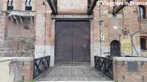

<h2>provando ad aggirare il fossato hai trovato un ponte che ti ha permesso di raggiungere l'altra sponda</h2>
<br>
<h1>sei arrivato ad un checkpoint</h1>

<br>
<h1>cosa vuoi fare?</h1>
<h2><a href="bussa.html">vuoi bussare?</a></h2>
<h2><a href="scavalca.html">vuoi scavalcare il cancello?</a></h2>
